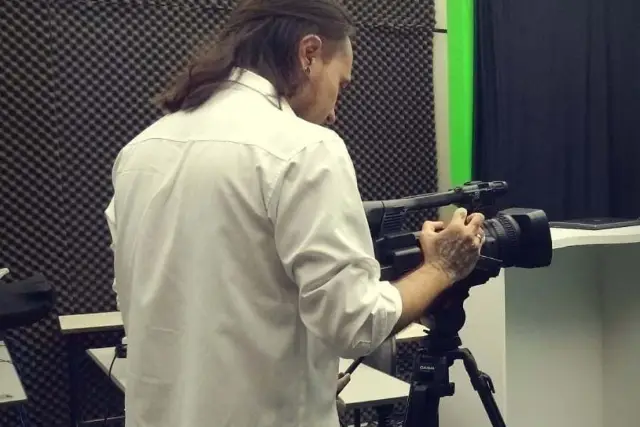

CEUCLAR apresenta oficina de produção de vídeo e curta-metragem

O vídeo há muito tempo vem conquistando cada vez mais espaço no cotidiano das pessoas. Podemos observar, ao longo dos tempos um grande avanço tecnológico nessa área. Filmes, clipes musicais, esquetes, notícias, entre outros formatos têm estado cada vez mais presentes no dia a dia das pessoas, que não apenas querem, mas também necessitam dessa ferramenta que potencializa a informação de uma maneira rápida e dinâmica.
As crianças nascem, e já nos primeiros anos, obtém o domínio dessa linguagem. O que significa que esse avanço será ainda mais forte nos próximos tempos. O vídeo está cada vez mais inserido e fazendo a diferença, na arte, política, educação e comunicação – todos se direcionam nesse sentido e seguem o caminho.
Visando esse salto tecnológico, e para facilitar ainda mais essa, que é mais uma extensão do ser humano, a educação se volta para ensinar o uso dessa ferramenta.
Com o Centro Universitário Claretiano, não acontece diferente. Para lecionar e a quem mais estiver interessado em aprender a respeito do mundo do vídeo, o CEUCLAR irá apresentar a oficina “Técnicas de Cinema Para Produção de Vídeos e Curta-metragens (2018)”.
A oficina acontecerá no dia 19 de julho, e será transmitida a distância, das 19h30 às 21h30 (horário de Brasília-DF).
A apresentação será realizada por Renan de Omote Cardoso. O ministrante, que trabalha no núcleo de vídeo aula do CEUCLAR de Batatais, além desta experiência, também traz em sua bagagem, os trabalhos que desenvolveu ao longo dos anos, no projeto de cinema “Meu Primeiro Filme”, que acontece anualmente, em Batatais-SP, e tem como foco ensinar o ato de participar e produzir curta-metragens.
A oficina abordará os seguintes tópicos:
- Como e porque trabalhar com vídeo;
- Pré-produção e roteirização;
- Técnicas de filmagem, equipe e equipamentos.
- Pós-produção e divulgação.
E a aula não se resumirá apenas na palestra. Os participantes também poderão interagir com o ministrante, através de um chat, que contará com moderação para organizar e selecionar as questões.
Quanto ao público alvo, não são apenas publicitários, designers, videomakers, cineastas, jornalistas, entre outros campos que utilizam muito do vídeo, que podem se inscrever. Todos os interessados em buscar, descobrir, entender e aprender sobre o mundo da sétima arte, serão bem-vindos.
Certificado
Quem realizar a matrícula até a data da transmissão e pagar a taxa de R$ 20, receberá um certificado, encaminhado via e-mail, em até três dias úteis, contando a partir do dia da atividade. Já aqueles que realizarem o curso após 19 de julho, receberão o certificado em até 07 dias úteis. A carga horária da oficina é de 2 horas.
Os que não conseguirem assistir à transmissão, no dia 19, não precisam se preocupar. Ainda haverá tempo para participar. Durante um período determinado pelo próprio CEUCLAR, será possível assistir à oficina, com direito ao certificado, mediante taxa e inscrição do participante.
Para se inscrever, basta acessar este link.
Entrevista com Renan de Omote Cardoso – ministrante da oficina Técnicas de Cinema Para Produção de Vídeos e Curta-metragens (2018)
Para falar mais sobre a oficina e também sobre o cinema, o Papo Alternativo bateu um papo rápido com o ministrante Renan de Omote Cardoso, que através de sua experiência no mundo do vídeo, nos contou a respeito da própria oficina, além de abordar sobre sua visão do mundo, com relação a crescente transformação, que a ferramenta vem tendo, não apenas para a linguagem, mas também, no modo como vem facilitando e mudando a vida das pessoas.
(PAPO ALTERNATIVO) Olá, Renan, primeiramente, muito obrigado por conversar com o Papo Alternativo. Sabemos que a oficina será realizada através de transmissão via internet e os participantes poderão interagir. Mas especificamente, como vai funcionar, o que o pessoal precisa fazer para participar e o que será debatido?
(RENAN) Para participar da oficina, basta acessar o link de inscrição (http://claretianobt.com.br/eventos-academicos/tecnicas-de-cinema-para-producao-de-videos-e-curta-metragens/edtyQPQZIFIV/2018) e lá estão todas as informações, como o link do evento. Recomendo que os interessados salvem este link para não perder. Lembrando que é tudo completamente gratuito, a menos que o interessado queira um certificado da oficina. Nesses casos, é cobrado uma taxa de 20 reais.
Vamos falar um pouco sobre o básico do cinema, o que poderá ser útil não apenas para quem já trabalha na área, mas também para iniciantes e curiosos.
Para aumentar a interação, quem estiver assistindo poderá conversar e fazer perguntas no chat, que serão respondidas ao vivo.
(PAPO ALTERNATIVO) O público-alvo será o pessoal relacionado com áreas de cinema, marketing, publicidade e propaganda, entre outras do universo do audiovisual. Porém a linguagem será acessível para a pessoa que não seja dessas áreas, mas que tenha interesse no assunto?
(RENAN) Sim, a ideia na verdade é trazer alguns curiosos sobre a arte do cinema para um bate-papo. Não vou me aprofundar em técnicas de vídeo, como o próprio nome da oficina sugere. A ideia é trazer o conhecimento básico, para que leigos no assunto possam aprender algo novo.
(PAPO ALTERNATIVO) Agora, Renan, por exemplo, perdi essa palestra. Já existe a ideia de futuramente realizar outra oficina com essa temática? Ou então alguma com abordagens diferentes, com tema voltado para a área de audiovisual?
(RENAN) Para quem perdeu a transmissão ao vivo, o vídeo continuará no youtube, no canal do Claretiano (https://bit.ly/2HLHIfU), por um tempo determinado pela própria Instituição. Ainda nesse tempo, será possível assistir, e até mesmo se inscrever na palestra para gerar o certificado, caso a pessoa deseje.
Por enquanto não temos outra oficina com esse tema, mas dependendo do público que alcançarmos, podemos vir a fazer.
(PAPO ALTERNATIVO) Você é uma pessoa totalmente envolvida e inserida na área do vídeo e do cinema. O Brasil vive uma boa fase nesse aspecto. Aqui em Batatais, já temos outros projetos que abordam o fazer cinema, como é o caso do projeto Meu Primeiro Filme, o qual você já esteve a frente, mas também temos projetos que discutem e debatem filmes, como é o caso do Cine Clube. Agora o Claretiano traz essa oficina. Eu queria que você, com toda a sua experiência, falasse como enxerga o futuro do cinema, não apenas no Brasil, mas também aqui em Batatais, que tem se fortalecido muito nessa área.
(RENAN) O cinema cresce porque a linguagem do vídeo cresce. Crianças de 2 anos já passam o dia no YouTube, escolhendo qual vídeo assiste, mesmo sem saber ler. A linguagem em audiovisual seduz muito fácil as pessoas, por ser muito interativa. As novas gerações vão ler muito menos livros e assistir muito mais vídeos. Levando tudo isso em conta, fica evidente que o cinema também vai se fortalecer.
Eu considero que aqui em Batatais temos uma cultura forte em audiovisual. Penso que com iniciativas como as que você citou estamos colaborando para que isso se fortaleça cada vez mais.
(PAPO ALTERNATIVO) O mundo hoje é muito mais visual do que antigamente. Temos essa necessidade e também a facilidade de acesso, devido ao avanço da tecnologia. Hoje em dia é mais fácil tanto para buscar e assistir vídeos, quanto para gravar e editar. A palestra pretende tocar nesses assuntos?
(RENAN) Sim, vou falar um pouco sobre o porquê de o vídeo ser tão importante nos dias de hoje. Como eu trabalho em uma editoração de material didático, eu sei a importância que essa ferramenta tem na aprendizagem dos alunos. Muitos deles (e a tendência é esse número continuar aumentando) preferem os vídeos do que os textos dos materiais para estudar.
E hoje todos temos uma câmera no bolso, no celular. Todos podemos baixar aplicativos gratuitos de edição de vídeo. Pense em como tudo está fácil! Basicamente, temos a faca e o queijo. Na minha oficina, vou ensinar como se corta.
(PAPO ALTERNATIVO) Pegando um gancho neste assunto, queria saber qual a sua visão a respeito desse avanço. É promissor? E quais são os cuidados a serem tomados, com essa ferramenta estando mais acessível?
(RENAN) É promissor demais! Se o vídeo tem funcionado bem, não tem motivo para não usarmos e abusarmos desse recurso. Já foi comprovado por estudos científicos que nós aprendemos mais com vídeo do que com podcasts, textos ou imagens, porque nós ouvimos e vemos o conteúdo ao mesmo tempo.
O que temos de ter em mente é que a nova geração não irá conseguir estudar por livros! Tem crianças que pegam um livro e tentam passa-lo como se fosse um touch screen, de tão acostumados que estão com essa tecnologia.
Acho que os cuidados que devemos ter é exatamente essa conscientização de que o vídeo foi uma novidade para nossa geração, mas é algo natural para a próxima.
(PAPO ALTERNATIVO) Renan, nossa entrevista está chegando ao fim. Gostaria de agradecer mais uma vez por ter batido esse papo alternativo aqui conosco. Esse último espaço é reservado para você deixar alguma mensagem para quem acompanhou a entrevista, ou alguma outra que você queira falar.
(RENAN) Gostaria de reforçar aos interessados que se cadastrem no link abaixo para que fiquem inscritos na palestra. É algo gratuito que eu e o Claretiano estamos oferecendo a todos vocês, é uma oportunidade de aprendizado que vocês poderão usar, seja para filmar o aniversário de um sobrinho, fazer um trabalho na escola, criar um canal no youtube, enfim…
Agradeço ao Papo Alternativo pelo belo trabalho que tem feito e pelas portas que tem aberto às bandas, artistas e outros ativistas culturais. Grande abraço, e nos vemos no dia 19 de julho na oficina!
Link da inscrição: http://claretianobt.com.br/eventos-academicos/tecnicas-de-cinema-para-producao-de-videos-e-curta-metragens/edtyQPQZIFIV/2018